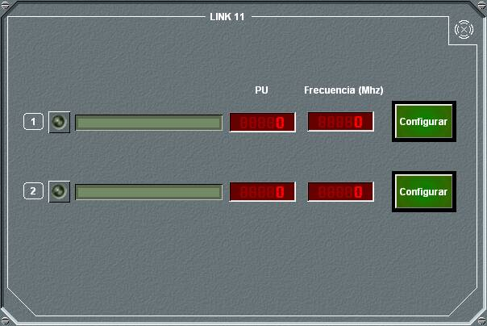
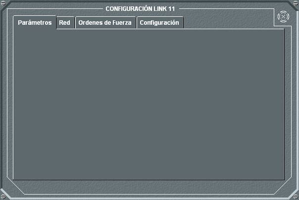
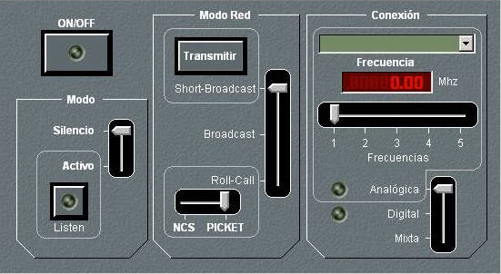
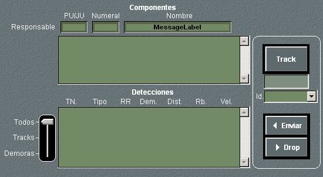
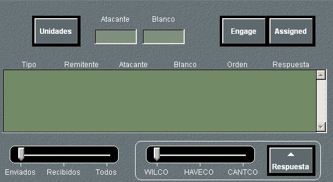
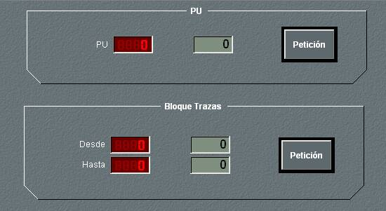

En este panel de detalle general de Link 11 se muestran los dos equipos instalados en la unidad, su nombre, el número de Picket Unit y su frecuencia de trabajo.
Pulsando en el botón Configurar, se despliega el panel de detalle de configuración de Link 11, que a su vez dispone de cuatro solapas para diferentes opciones.

Pulsando en la solapa Parámetros, se muestra el siguiente panel de detalle:

Desde este panel pueden ejecutarse las siguientes acciones:
- Encender / Apagar el equipo, pulsando el botón ON/OFF. En las unidades submarinas solo se puede encender el equipo si están en superficie o tienen un mástil con antena para la banda correspondiente izado.
- Establecer el Modo de Operación del equipo, seleccionando entre Silencio y Activo, y en este último caso se puede seleccionar también el modo Listen.
- Establecer el Modo de Red, seleccionando entre Short-Broadcast, Broadcast y Roll-Call. En el caso de seleccionar el Modo Short-Broadcast, existe un botón para solicitar la transmisión. En el caso de seleccionar el Modo Roll-Call, se puede seleccionar también que la unidad sea NCS o Picket.
- Seleccionar el tipo de conexión: Analógica (por equipo de radio frecuencia), Digital (por satélite) o Mixta (por ambos, RF y satélite).
- Si el tipo de conexión seleccionado es Analógico o Mixto, elegir el equipo de comunicaciones y la frecuencia. Cuando el NCS cambia de frecuencia, todos los PUs en la red en ese momento cambian automáticamente dicha frecuencia.
Pulsando en la solapa Red, se muestra el siguiente panel de detalle

En este panel de detalle se muestra la unidad Responsable de la Red en la que se encuentra la unidad propia, indicando su PU/JU, Numeral y Nombre, la lista de las Unidades integrantes de la red, y la lista de Detecciones de la red, indicando para cada una su TN, Tipo (Contacto o Marcación), Responsable, Demora, Distancia, Rumbo y Velocidad. La lista de detecciones puede ser filtrada por Tipo (Contacto, Marcación o Todas).
Además, desde este panel el operador puede activar o cancelar el envío de una detección, ya sea contacto, marcación o punto especial. Para activar el envío deberá seleccionar la detección en Hook, pulsar el botón Hook, con lo cual el identificador de la detección se mostrará bajo este botón, si se trata de un contacto, seleccionar una identificación distinta de PENDING (por defecto UNKNOWN) y pulsar Enviar. Para desactivar el envío de una detección deberá seleccionarla en la lista y pulsar Drop.
Pulsando en la solapa ForceOrder, se muestra el siguiente panel de detalle

Este panel se utiliza para gestionar las órdenes de enganche y asignación. Para poder emitir Force Orders debe haberse dotado de esa capacidad a la unidad en Preparación.
Las acciones que pueden ejecutarse desde este panel son:
- Seleccionar unidades Atacante y Blanco. Cuando en la pantalla táctica se pone en Hook una unidad y en Marca otra, al pulsar el botón Unidades se seleccionan la unidad en Hook como atacante y la unidad en Marca como Blanco, apareciendo sus identificadores en los campos correspondientes.
Cuando se envía una orden, tanto en la pantalla gráfica del FO como en la de la unidad atacante aparece una línea discontinua que une la unidad atacante y la atacada. Además, la unidad atacada será rodeada por un símbolo que depende de la respuesta recibida de la unidad atacante.
- WILCO: Cuadrado Rojo
- CANTCO : cuadrado (rojo) y línea en blinking.
- HAVECO: cuadrado (verde)
- ASSIGNED : cuadrado (negro)
- Seleccionar el tipo de orden. Pulsando el botón Engage o Assigned, se selecciona el tipo de Force Order a enviar a la unidad Atacante, entre enganchar o asignado.
- Consultar la lista de Force Orders enviadas y recibidas. En esta lista se muestra el tipo (enviada o recibida), la unidad que la envía, la unidad atacante, el blanco, la orden y la respuesta. En la parte inferior izquierda del panel existe una barra de desplazamiento que permite filtrar la lista, de forma que se muestren solamente los mensajes enviados, los recibidos o todos.
- Enviar Respuesta a una Orden recibida: Seleccionando una Force Order de la lista y una respuesta utilizando la barra de desplazamiento correspondiente (WILCO, HAVECO, CANTCO), al pulsar el botón Respuesta se envía la respuesta al emisor de la orden.
Pulsando en la solapa Configuración, se muestra el siguiente panel de detalle

En este panel de detalle se pueden ejecutar las siguientes acciones:
- Modificar el número de PU. Introduciendo un número de PU, al pulsar el botón Petición, se modifica el número de PU y se actualiza en el campo correspondiente.
- Modificar el bloque de trazas asignado a la unidad. Introduciendo el valor inferior (Desde) y el valor superior (Hasta) del bloque, al pulsar el botón Petición se modifica el bloque de trazas y se actualizan los campos correspondientes. El sistema comprueba que el bloque de trazas seleccionado no coincida con los seleccionados por otra unidad tanto en su Link-11 como en sus tres bloques Link-16 y en caso de conflicto genera un mensaje de error.
Notas:
- Los contactos propios sin clasificar no son transmitidos por Link-11.
- Los contactos propios que coincidan con información de Link-11, desaparecerán automáticamente sin hacer blinking de los mismos.
- Las detecciones serán numeradas dentro del bloque de trazas correspondiente a la unidad según el orden de entrada en las mismas, el primero que entre en la red pondrá el símbolo de los contactos e informa de los mismos.
- Al entrar la unidad a formar parte de la red Link la simbología y numeración que prevalece será la de la red, manteniéndola aunque se salga de la red.
- Las demoras ESM transmitidas por LINK11 permanecen en la pantalla durante el tiempo de persistencia establecido en el fichero de configuración (Galeon.rc), transcurrido ese tiempo, sólo se muestran si el operador pone la traza en Hook. Al quitar el Hook de la traza la demora desaparece tras el tiempo de persistencia.
El tiempo de persistencia se puede configurar con valor 0, de esta manera la demora permanece siempre.
La configuración de la persistencia de las demoras ESM no está disponible en todas las versiones del simulador.